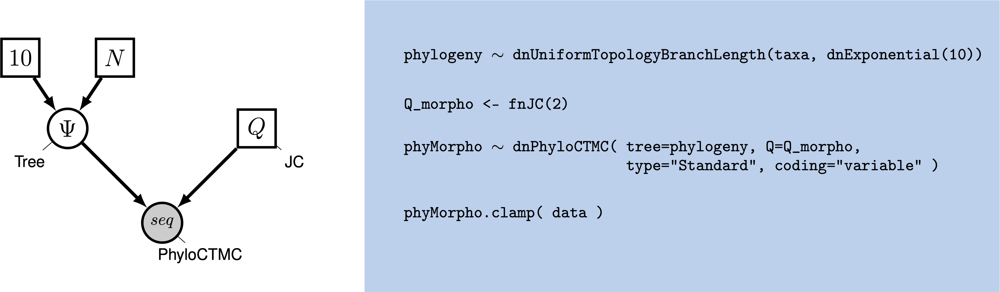
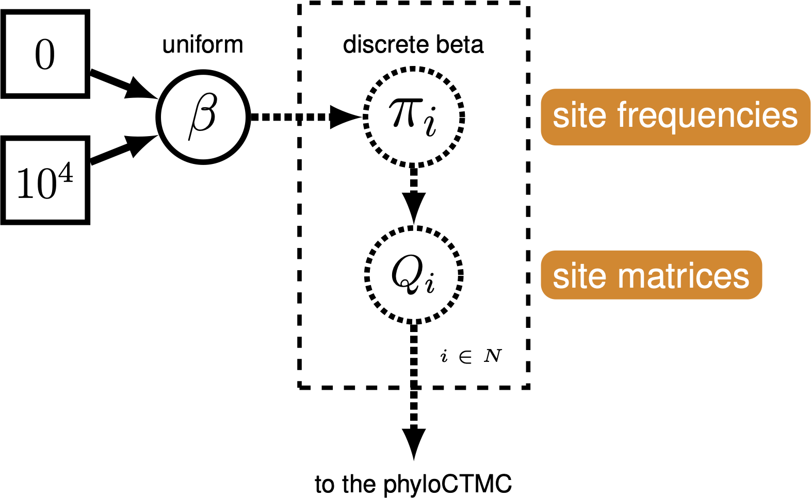

Introduction
While molecular data have become the default for building phylogenetic trees for many types of evolutionary analysis, morphological data remains important, particularly for analyses involving fossils. The use of morphological data raises special considerations for model-based methods for phylogenetic inference. Morphological data are typically collected to maximize the number of parsimony-informative characters - that is, the characters that provide information in favor of one topology over another. Morphological characters also do not carry common meanings from one character in a matrix to the next; character codings are made arbitrarily. These two factors require extensions to our existing phylogenetic models. Accounting for the complexity of morphological characters remains challenging. This tutorial will provide a discussion of modeling morphological characters, and will demonstrate how to perform Bayesian phylogenetic analysis with morphology using RevBayes (Höhna et al. 2016).
Overview of Discrete Morphology Models

Molecular data forms the basis of most phylogenetic analyses today. However, morphological characters remain relevant: Fossils often provide our only direct observation of extinct biodiversity; DNA degradation can make it difficult or impossible to obtain sufficient molecular data from fragile museum specimens. Using morphological data can help researchers include specimens in their phylogeny that might be left out of a molecular tree.
To understand how morphological characters are modeled, it is important
to understand how characters are collected. Unlike in molecular data,
for which homology is algorithmically determined, homology in a
character is typically assessed by an expert. Biologists will typically
decide what characters are homologous by looking across specimens at the
same structure in multiple taxa; they may also look at the developmental
origin of structures in making this assessment (Phillips 2006). Once
homology is determined, characters are broken down into states, or
different forms a single character can take. The state 0 commonly
refers to absence, meaning that character is not present. In some
codings, absence will mean that character has not evolved in that group.
In others, absence means that that character has not evolved in that
group, and/or that that character has been lost in that group
(Freudenstein 2005). This type of coding is arbitrary, but both
non-random and meaningful, and poses challenges for how we model
the data.
Historically, most phylogenetic analyses using morphological characters have been performed using the maximum parsimony optimality criterion. Maximum parsimony analysis involves proposing trees from the morphological data. Each tree is evaluated according to how many changes it implied in the data, and the tree that requires the fewest changes is preferred. In this way of estimating a tree, a character that does not change, or changes only in one taxon, cannot be used to discriminate between trees (i.e., it does not favor a topology). Therefore, workers with parsimony typically do not collect characters that are parsimony uninformative.
In 2001, Paul Lewis (Lewis 2001) introduced a generalization of the Jukes-Cantor model of sequence evolution for use with morphological data. This model, called the Mk (Markov model, assuming each character is in one of k states) model provided a mathematical formulation that could be used to estimate trees from morphological data in both likelihood and Bayesian frameworks. While this model is a useful step forward, as a generalization of the Jukes-Cantor, it still makes fairly simplistic assumptions. This tutorial will guide you through estimating a phylogeny with the Mk model, and two useful extensions to the model.
The Mk Model
The Mk model is a generalization of the Jukes-Cantor model of nucleotide sequence evolution, which we discussed in Nucleotide substitution models. The Q matrix for a two-state Mk model looks like so:
\[Q = \begin{pmatrix} -\mu_0 & \mu_{01} \\ \mu_{10} & -\mu_1 &\\ \end{pmatrix} \mbox{ ,}\]This matrix can be expanded to accommodate multi-state data, as well:
\[Q = \begin{pmatrix} -\mu_0 & \mu_{01} & \mu_{02} & \mu_{03} \\ \mu_{10} & -\mu_1 & \mu_{12} & \mu_{13} \\ \mu_{20} & \mu_{21} & -\mu_2 & \mu_{23} \\ \mu_{30} & \mu_{31} & \mu_{32} & -\mu_3 \end{pmatrix} \mbox{ ,}\]However, the Mk model sets transitions to be equal from any state to any other state. In that sense, our multistate matrix really looks like this:
\[Q = \begin{pmatrix} -(k-1)\mu & \mu & \mu & \mu \\ \mu & -(k-1)\mu & \mu & \mu \\ \mu & \mu & -(k-1)\mu & \mu \\ \mu & \mu & \mu & -(k-1)\mu \\ \end{pmatrix} \mbox{ ,}\]Because this is a Jukes-Cantor-like model (Jukes and Cantor 1969), state frequencies do not vary as a model parameter. These assumptions may seem unrealistic. However, all models are a compromise between reality and generalizability. Prior work has demonstrated that, in many conditions, the model does perform adequately (Wright and Hillis 2014). Because morphological characters do not carry common meaning across sites in a matrix in the way that nucleotide characters do, making assumptions that fit all characters is challenging. A visualization of this simple model can be seen in .
We will first perform a phylogenetic analysis using the Mk model. In further sections, we will explore how to relax key assumptions of the Mk model.
Ascertainment Bias
When Lewis first introduced the Mk model, he observed that branch lengths on the trees were greatly inflated. The reason for this is that when morphological characters are collected, characters that do not vary, or vary in a non-parsimony-informative way (such as autapomorphies) are excluded. Excluding these low-rate characters causes the overall amount of evolution to be over-estimated. This causes an inflation in the branch lengths (Lewis 2001).
Therefore, when performing a morphological phylogenetic analysis, it is important to correct for this bias. There are numerous statistically valid ways to perform this correction (Allman and Rhodes 2008). Original corrections simulated invariant and non-parsimony informative characters along the proposed tree. The likelihood of these characters would then be calculated and used to normalize the total likelihood value. RevBayes implements a dynamic programming approach that calculates the same likelihood, but does so faster.
Example: Inferring a Phylogeny of Fossil Bears Using the Mk Model
In this example, we will use morphological character data from 18 taxa of extinct bears (Abella et al. 2011). The dataset contains 62 binary characters, a fairly typical dataset size for morphological characters.
Tutorial Format
This tutorial follows a specific format for issuing instructions and information.
The boxed instructions guide you to complete tasks that are not part of the RevBayes syntax, but rather direct you to create directories or files or similar.
Information describing the commands and instructions will be written in paragraph-form before or after they are issued.
All command-line text, including all Rev syntax, are given in
monotype font. Furthermore, blocks of Rev code that are needed to
build the model, specify the analysis, or execute the run are given in
separate shaded boxes. For example, we will instruct you to create a
constant node called example that is equal to 1.0 using the <-
operator like this:
example <- 1.0
It is important to be aware that some PDF viewers may render some characters given as differently. Thus, if you copy and paste text from this PDF, you may introduce some incorrect characters. Because of this, we recommend that you type the instructions in this tutorial or copy them from the scripts provided.
Data and Files
On your own computer, create a directory called data. In this directory download the data files:
bears.nex.
Getting Started
Create a new directory (in
RB_DiscreteMorphology_Tutorial) called scripts. (If you do not have this folder, please refer to the directions in section .)
When you execute RevBayes in this exercise, you will do so within the
main directory you created (RB_DiscreteMorphology_Tutorial), thus,
if you are using a Unix-based operating system, we recommend that you
add the RevBayes binary to your path. Alternatively make sure that you set the
working directory to, for example, RB_DiscreteMorphology_Tutorial if this is
the directory you stored the scripts and data in.
Creating Rev Files
In this exercise, you will work primarily in your text editor and
create a set of files that will be easily managed and interchanged.
In this first section, you will write the following file
from scratch and save them in the scripts directory:
mcmc_mk.Rev: the Rev file that loads the data, specifies the model describing discrete morphological character change (binary characters), and specifies the monitors and MCMC sampler.
All of the files that you will create are also provided in the RevBayes tutorial here (see the top of this webpage). Please refer to these files to verify or troubleshoot your own scripts.
Open your text editor and create the Rev-script file called mcmc_Mk.Rev in the
scriptsdirectory.Enter the Rev code provided in this section in the new file.
In this section you will begin the file and write the Rev commands for loading in the taxon list and managing the data matrices. Then, starting in section , you will move on to specifying each of the model components. Once the model specifications are complete, you will complete the script with the instructions given in section .
Load Data Matrices
RevBayes uses the function readDiscreteCharacterData() to load a
data matrix to the workspace from a formatted file. This function can be
used for both molecular sequences and discrete morphological characters.
Import the morphological character matrix and assign it to the variable
morpho.
morpho <- readDiscreteCharacterData("data/bears.nex")
Create Helper Variables
Before we begin writing the Rev scripts for each of the models, we need to instantiate a couple “helper variables” that will be used by downstream parts of our model specification.
Create a new constant node called num_taxa that is equal to the number
of species in our analysis (18) and a constant node called num_branches representing
the number of branches in the tree. We will also create a constant node of
the taxon names. This list will be used to initialize the tree.
taxa <- morpho.names()
num_taxa <- morpho.size()
num_branches <- 2 * num_taxa - 2
Next, create two workspace variables called moves and monitors. These variable
vectors containing all of the MCMC moves and monitors used
to propose new states for every stochastic node in the model graph.
moves = VectorMoves()
monitors = VectorMonitors()
One important distinction here is that moves and monitors is part of the RevBayes
workspace and not the hierarchical model. Thus, we use the workspace
assignment operator = instead of the constant node assignment <-.
The Mk Model
First, we will create a joint prior on the branch lengths and tree topology. This should be familiar from the Nucleotide substitution models
br_len_lambda ~ dnExp(0.2)
moves.append( mvScale(br_len_lambda, weight=2) )
phylogeny ~ dnUniformTopologyBranchLength(taxa, branchLengthDistribution=dnExponential(br_len_lambda))
moves.append( mvNNI(phylogeny, weight=n_branches/2.0) )
moves.append( mvSPR(phylogeny, weight=n_branches/10.0) )
moves.append( mvBranchLengthScale(phylogeny, weight=n_branches) )
tree_length := phylogeny.treeLength()
Next, we will create a $Q$ matrix. Recall that the Mk model is simply a
generalization of the JC model. Therefore, we will create a 2x2 $Q$ matrix
using fnJC, which initializes Q-matrices with equal transition
probabilities between all states.
Q_morpho <- fnJC(2)
Now that we have the basics of the model specified, we will add Gamma-distributed rate variation and specify moves on the parameter to the Gamma distribution.
alpha_morpho ~ dnUniform( 0, 1E6 )
rates_morpho := fnDiscretizeGamma( alpha_morpho, alpha_morpho, 4 )
#Moves on the parameters to the Gamma distribution.
moves.append( mvScale(alpha_morpho, lambda=1, weight=2.0) )
Lastly, we set up the CTMC. This should also be familiar from the Nucleotide substitution models. We see some familiar pieces: tree, $Q$ matrix and site_rates. We also have two new keywords: data type and coding. The data type argument specifies the type of data - in our case, “Standard”, the specification for morphology.
phyMorpho ~ dnPhyloCTMC(tree=phylogeny, siteRates=rates_morpho, Q=Q_morpho, type="Standard")
phyMorpho.clamp(morpho)
All of the components of the model are now specified.
Complete MCMC Analysis
Create Model Object
We can now create our workspace model variable with our fully specified
model DAG. We will do this with the model() function and provide a
single node in the graph (phylogeny).
mymodel = model(phylogeny)
The object mymodel is a wrapper around the entire model graph and
allows us to pass the model to various functions that are specific to
our MCMC analysis.
Specify Monitors and Output Filenames
The next important step for our Rev-script is to specify the
monitors and output file names. For this, we create a vector called
monitors that will each sample and record or output our MCMC.
The first monitor we will create will monitor every named random
variable in our model graph. This will include every stochastic and
deterministic node using the mnModel monitor. The only parameter that
is not included in the mnModel is the tree topology. Therefore, the
parameters in the file written by this monitor are all numerical
parameters written to a tab-separated text file that can be opened by
accessory programs for evaluating such parameters. We will also name the
output file for this monitor and indicate that we wish to sample our
MCMC every 10 cycles.
monitors.append( mnModel(filename="output/mk.log", printgen=10) )
The mnFile monitor writes any parameter we specify to file. Thus, if
we only cared about the branch lengths and nothing else (this is not a
typical or recommended attitude for an analysis this complex) we
wouldnt use the mnModel monitor above and just use the mnFile
monitor to write a smaller and simpler output file. Since the tree
topology is not included in the mnModel monitor (because it is not
numerical), we will use mnFile to write the tree to file by specifying
our phylogeny` variable in the arguments.
monitors.append( mnFile(filename="output/mk.trees", printgen=10, phylogeny) )
The third monitor we will add to our analysis will print information to
the screen. Like with mnFile we must tell mnScreen which parameters
we’d like to see updated on the screen.
monitors.append( mnScreen(printgen=100) )
Set-Up the MCMC
Once we have set up our model, moves, and monitors, we can now create
the workspace variable that defines our MCMC run. We do this using the
mcmc() function that simply takes the three main analysis components
as arguments.
mymcmc = mcmc(mymodel, monitors, moves, nruns=2, combine="mixed")
The MCMC object that we named mymcmc has a member method called
.run(). This will execute our analysis and we will set the chain
length to 20000 cycles using the generations option.
mymcmc.run(generations=20000, tuningInterval=200)
Once our Markov chain has terminated, we will want RevBayes to close.
Tell the program to quit using the q() function.
q()
You made it! Save all of your files.
Execute the MCMC Analysis
With all the parameters specified and all analysis components in place, you are now ready to run your analysis. The Rev scripts you just created will all be used by RevBayes.
Begin by running the RevBayes executable. In Unix systems, type the following in your terminal (if the RevBayes binary is in your path): rb
Provided that you started RevBayes from the correct directory
(RB_DiscreteMorphology_Tutorial), you can then use the source()
function to feed RevBayes your Rev-script file (mcmc_mk.Rev).
source("scripts/mcmc_mk.Rev")
This will execute the analysis and you should see the following output (though not the exact same values):
Processing file "scripts/mcmc_mk.Rev"
Successfully read one character matrix from file 'data/bears.nex'
Running MCMC simulation
This simulation runs 2 independent replicates.
The simulator uses 5 different moves in a random move schedule with 58.4 moves per iteration
Iter | Posterior | Likelihood | Prior | elapsed | ETA |
----------------------------------------------------------------------------------------------------
0 | -680.054 | -649.452 | -30.6022 | 00:00:00 | --:--:-- |
100 | -419.885 | -414.047 | -5.83883 | 00:00:01 | --:--:-- |
200 | -427.028 | -417.426 | -9.60277 | 00:00:01 | 00:00:49 |
300 | -421.585 | -417.96 | -3.6253 | 00:00:02 | 00:01:04 |
400 | -431.561 | -427.124 | -4.43711 | 00:00:03 | 00:01:12 |
500 | -423.507 | -422.002 | -1.50428 | 00:00:04 | 00:01:16 |
600 | -418.061 | -419.644 | 1.58298 | 00:00:05 | 00:01:18 |
700 | -427.552 | -423.884 | -3.66793 | 00:00:05 | 00:01:06 |
800 | -437.39 | -424.302 | -13.0876 | 00:00:06 | 00:01:09 |
900 | -418.405 | -413.872 | -4.5323 | 00:00:07 | 00:01:10 |
1000 | -425.641 | -411.291 | -14.3491 | 00:00:08 | 00:01:12 |
...
When the analysis is complete, RevBayes will quit and you will have a
new directory called output that will contain all of the files you
specified with the monitors ().
Exercises
- Run the MCMC analysis in RevBayes.
- Look at the resulting files mk_run_1.log and mk_run_2.log in Tracer and check for convergence.
- Look at the majority rule consesus tree stored mk.majrule.tre and the MAP tree stored in mk.map.tre in FigTree.
Ascertainment Bias
As discussed earlier in the section , we also need to correct for ascertainment bias.
Create a copy of your previous
Revscript, and call it mcmc_Mkv.Rev. You will need to modify theRevcode provided in this section in this file.
In RevBayes it is actually very simple to add a correction for ascertainment bias.
You only need to set the option coding="variable" in the dnPhyloCTMC. Coding specifies
what type of ascertainment bias is expected. We are using the variable correction,
as we have no invariant character in our matrix. If we also lacked
parsimony non-informative characters, we would use the coding informative.
phyMorpho ~ dnPhyloCTMC(tree=phylogeny, siteRates=rates_morpho, Q=Q_morpho, type="Standard", coding="variable")
Remember to change all filenames for the output, e.g., from
output/mk.logtooutput/mkv.log.
That’s all you need to do! Now run this script in RevBayes.
Example: Relaxing the Assumption of Equal Transition Probabilities
Make a copy of the Rev script you made earlier. Call it
mcmc_mk_dicretized.Rev. This new script will contain the new model parameters and models.

The Mk model makes a number of assumptions, but one that may strike you as unrealistic is the assumption that characters are equally likely to change from any one state to any other state. That means that a trait is as likely to be gained as lost. While this may hold true for some traits, we expect that it may be untrue for many others.
RevBayes has functionality to allow us to relax this assumption. We do this by specifying a Beta prior on state frequencies. Remember from the Nucleotide substitution models lesson that stationary frequencies impact how likely we are to see changes in a character. For example, it may be very likely, in a character, to change from 0 to 1. But if the frequency of 0 is very low, we will still seldom see this change.
We can exploit the relationship between state frequencies and observed changes to allow for variable Q matrices across characters . To do this, we generate a Beta distribution on state frequencies, and use the state frequencies from that Beta distribution to generate a series of Q-matrices to use to evaluate our data (Pagel and Meade 2004).
This type of model is called a mixture model. There are assumed to be subdivisions in the data, which may require different parameters (in this case, state frequencies). These subdivisions are not defined a priori. This model has previously been shown to be effective for a range of empirical and simulated datasets (Wright et al. 2016).
Modifying the Rev-script
At each place in which the output files are specified in the MCMC file,
change the output path so you do not overwrite the output from the
previous exercise. For example, you might call your output file
output/mk_discretized.log and output/mk_discretized.trees. Change
source statement to indicate the new model file.
We will use a discretized Beta distribution to place a prior on state frequencies.
The Beta distribution has two parameters, $\alpha$ and $\beta$. These two
parameters specify the shape of the distribution. State frequencies will
be evaluated according to this distribution, in the same way that rate
variation is evaluated according to the Gamma distribution. The
discretized distribution is split into multiple classes, each with it’s
own set of frequencies for the 0 and 1 characters. The number of classes
can vary; we have chosen 4 for tractability. Note that we need to make sure that this
discretization results into a symmetric model, therefore we will use only one parameter
for the Beta distribution: beta_scale so that $\alpha = \beta$.
num_cats = 4
beta_scale ~ dnLognormal( 0.0, sd=2*0.587405 )
moves.append( mvScale(beta_scale, lambda=1, weight=5.0 ) )
Above, we initialized the number of categories, the parameters to the Beta distribution, and the moves on the parameters to the Beta.
Next, we set the categories to each represent a quadrant of the Beta
distribution specified by the beta_scale.
cats := fnDiscretizeBeta(beta_scale, beta_scale, num_cats)
If you were to print the cats variable, you would see a list of state
frequencies like so:
Using these state frequencies, we will generate a new vector of Q
matrices. Because we are varying the state frequencies, we must use a Q
matrix generation function that allows for state frequencies to vary as
a parameter. We will, therefore, use the fnF81 function.
for (i in 1:cats.size())
{
Q[i] := fnF81(simplex(abs(1-cats[i]), cats[i]))
}
Additionally, in RevBayes we need to specify the probablities that a site evolves according to one
of the $Q$-matrices. For this model the probabilities must be equal because we need to guarantee that
the model is symmetric. This, we use a simplex function to create a vector that sums to 1.0.
matrix_probs <- simplex( rep(1,num_cats) )
The only other specification that needs to change in the model specification is the CTMC:
phyMorpho ~ dnPhyloCTMC(tree=phylogeny, siteRates=rates_morpho, Q=Q, type="Standard", coding="variable", siteMatrices=matrix_probs)
You will notice that we have added a command to tell the CTMC that we have multiple site matrices that will be applied to different characters in the matrix.
Set-Up the MCMC
The MCMC chain set-up does not need to change. Run the new MCMC file, just as you ran the plain Mk file. This estimation will take longer than the Mk model, due to increased model complexity.
Evaluate and Summarize Your Results
Evaluate MCMC
We will use Tracerto evaluate the MCMC samples from our
three estimations. Load all three of the MCMC logs into the
Tracer window. Highlight all three files in
the upper left-hand viewer () by right- or
command-clicking all three files.

Once all three trace logs are loaded and highlighted, first look at the estimated likelihoods. You will notice that the Mk model, as originally proposed by (Lewis 2001) is improved by allowing any state frequency heterogeneity. The discretized model and the Dirichlet model both represent improvements, but are fairly close in likelihood score to each other (). Likely, we would need to perform stepping stone model assessment to truly tell if the more complicated model is statistically justified. This analysis is too complicated and time-consuming for this tutorial period, but you will find instructions for performing the analysis in General Introduction to Model selection.

Click on the Trace panel. In the lower left hand corner, you will
notice an option to color each trace by the file it came from. Choose
this option (you may need to expand the window slightly to see it). Next
to this option, you can also see an option to add a legend to your trace
window. The results of this coloring can be seen in
. When the coloring is working, you will see that
the Mk model mixes quite well, but that mixing becomes worse as we relax
the assumption of equal state frequencies. This is because we are
greatly increasing model complexity. Therefore, we would need to run the
MCMC chains longer if we were to use these analyses in a paper.

We are interested in two aspects of the posterior distribution. First,
all analyses correct for the biased sampling of variable characters
except for the simple analysis. Then, we expect the
tree_length variable to be greater for simple
than for the remaining analyses, because our data are enriched for
variation. shows that
tree_length is approximately 30% greater for
simple than for mk_simple, which are
identical except that mk_simple corrects for sampling
bias. To compare these densities, click the “Marginal Prob Distribution”
tab in the upper part of the window, highlight all of the loaded Trace
Files, then select tree_length from the list of Traces.

Second, we are interested in characterizing the degree of heterogeneity estimated by the beta-discretized model. If the data were distributed by a single morphological rate matrix, then we would expect to see very little variation among the different values in cats, and very large values for the shape and scale parameters of the discrete-beta distribution. For example, if alpha_ofbeta = beta_ofbeta = 1000, then that would cause all discrete-beta categories to have values approaching 0.5, which approximates a symmetric Mk model.


shows that the four discrete-beta state frequencies do not all have the exact same value. In addition, shows that the priors on the discrete-beta distribution are small enough that we expect to see variance among cat values. If the data contained no information regarding the distribution of cat values, then the posterior estimates for alpha_ofbeta and beta_ofbeta would resemble the prior.
Summarizing tree estimates
The morphology trees estimated in Section and Section are summarized using a majority rule consensus tree (MRCT). Clades appearing in $p>0.5$ of posterior samples are resolved in the MRCT, while poorly support clades with $p \leq 0.5$ are shown as unresolved polytomies. Poor phylogenetic resolution might be caused by having too few phylogenetically informative characters, or it might be due to conflicting signals for certain species relationships. Because phylogenetic information is generated through model choice, let’s compare our topological estimates across models.

The MRCTs for the simple model with and without the +v correction are very similar to that for the discretized-beta model (). Note that the scale bars for branch lengths differ greatly, indicating that tree length estimates are inflated without the +v correction, just as we saw when comparing the posterior tree length densities. In general, it is important to assess whether your results are sensitive to model assumptions, such as the degree of model complexity, and any mechanistic assumptions that motivate the model’s design. In this case, our tree estimate appears to be robust to model complexity.
- Abella J., Montoya P., Morales J. 2011. Una nueva especie de Agriarctos (Ailuropodinae, Ursidae, Carnivora) en la localidad de Nombrevilla 2 (Zaragoza, España). Estudios Geológicos. 67:187–191.
- Allman E.S., Rhodes J.A. 2008. Identifying evolutionary trees and substitution parameters for the general Markov model with invariable sites. Mathematical Biosciences. 211:18–33.
- Freudenstein J.V. 2005. Characters, States and Homology. Systematic Biology. 54:965. 10.1080/10635150500354654
- Höhna S., Landis M.J., Heath T.A., Boussau B., Lartillot N., Moore B.R., Huelsenbeck J.P., Ronquist F. 2016. RevBayes: Bayesian Phylogenetic Inference Using Graphical Models and an Interactive Model-Specification Language. Systematic Biology. 65:726–736. 10.1093/sysbio/syw021
- Jukes T.H., Cantor C.R. 1969. Evolution of Protein Molecules. Mammalian Protein Metabolism. 3:21–132. 10.1016/B978-1-4832-3211-9.50009-7
- Lewis P.O. 2001. A Likelihood Approach to Estimating Phylogeny from Discrete Morphological Character Data. Systematic Biology. 50:913–925. 10.1080/106351501753462876
- Pagel M., Meade A. 2004. A Phylogenetic Mixture Model for Detecting Pattern-Heterogeneity in Gene Sequence or Character-State Data. Systematic Biology. 53:571–581. 10.1080/10635150490468675
- Phillips A.J. 2006. Homology assessment and molecular sequence alignment. Journal of Biomedical Informatics. 39:18–33. 10.1016/j.jbi.2005.11.005
- Wright A.M., Hillis D.M. 2014. Bayesian analysis using a simple likelihood model outperforms parsimony for estimation of phylogeny from discrete morphological data. PLoS One. 9:e109210. 10.1371/journal.pone.0109210
- Wright A.M., Lloyd G.T., Hillis D.M. 2016. Modeling Character Change Heterogeneity in Phylogenetic Analyses of Morphology through the Use of Priors. Systematic Biology. 65:602–611. 10.1093/sysbio/syv122